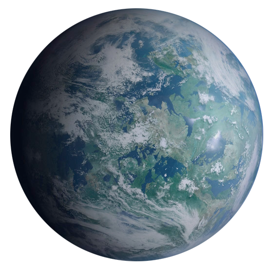

Marjora System: 
Marjora and its seven planets make up the capital system of Region Twelve. The focus of Imperial colonization
has
proven to be a smashing success.
Marjora I:
An otherwise desolate world with its surface scoured by the proximity to the nearby sun. It has earned it's
nickname of "The Sea of Glass" due to large sections of the planet being mostly made of superheated and
crystallized
glass. The planet was the site of two Imperial research facilities that have otherwise been abandoned due to the
untenable living conditions of the planet. A large solar flare necessitated a quick evacuation of those
facilities,
who knows what treasures they left behind?
Marjora II:
A dense forest world with a single moon. Marjora II is currently the company headquarters of Ashion
Agriculture,
one of the companies involved in the settling of Region Twelve. Large sections of forest have been carved out by
the
corporate authorities to create company towns.
Marjora III: 
Also known as Marjora Prime, this planet is the capital of Region Twelve. Marjora Prime is a terrestrial planet,
with large regions of forest, mountains, and ocean. The capital city is surrounded on three sides by a mountain
range that has been nicknamed 'The Marjora Bowl'. The city itself sports dense company housing near the
outskirts,
to meet the working demands of the factories. Large government buildings make up the center of the city.
Currently,
the Imperial Star Destroyer Decadence, rests above the city, casting a large shadow on the people below. On the
three moons of Marjora Prime, one would find mining outposts supported by light imperial garrisons.
Asteroid Belt:
In between Marjora Prime and Marjora IV, a large asteroid belt wraps around the system. It proved to be a
valuable
region for independent mining.
Marjora IV: 
Colder temperatures are found this far out in the system. The original candidate for the capital of the system,
however the better conditions of Marjora III were chosen instead. Now the host to a handful of pirate gangs,
Marjora
IV is truly an arctic badlands.
Marjora V: 
A ball of ice in space, completely frozen over. A few deep ice mining stations can be found here and there, but
otherwise it is a desolate place. If someone were looking for refuge in the Marjora system, there are few places
better than Marjora V
Marjora VI: 
On the outskirts of the system, the sunlight that reaches Marjora VI holds little warmth. Sporadic volcanic
activity
keeps the planet of interest to Imperial scientists, but otherwise it holds little value to the system.
Marjora VII: 
Barely larger than a planetoid, the furthest planet in the Marjora system would be nearly worthless were it not
for
the few Imperial garrisons that can be found here. Research Facilities and a refueling stations for ships coming
and
going from the system keep Marjora VII in the lens of the Empire.